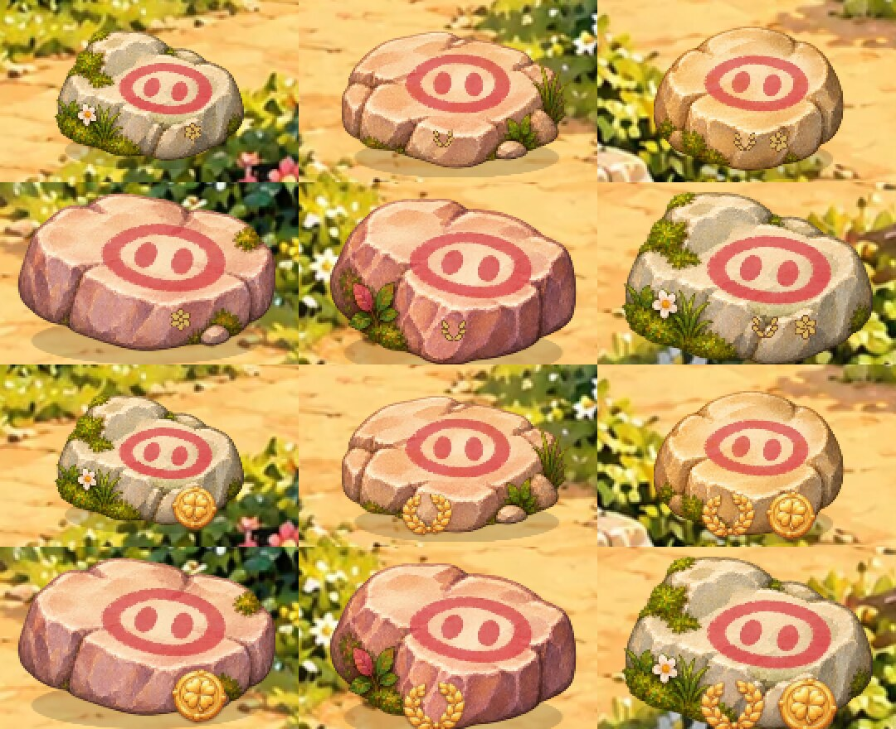
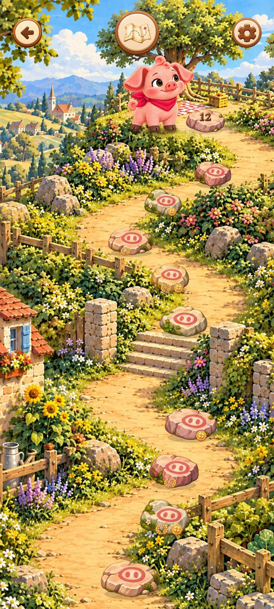
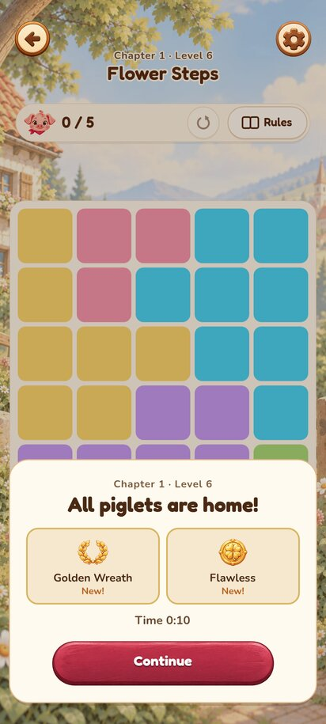
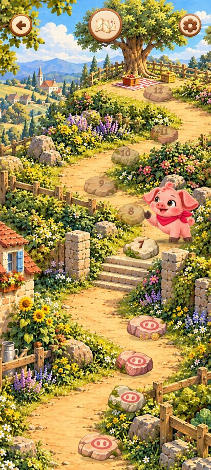
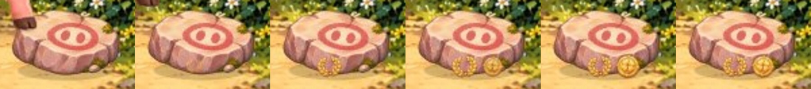
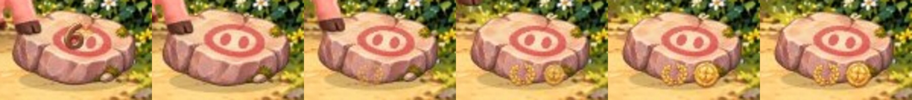
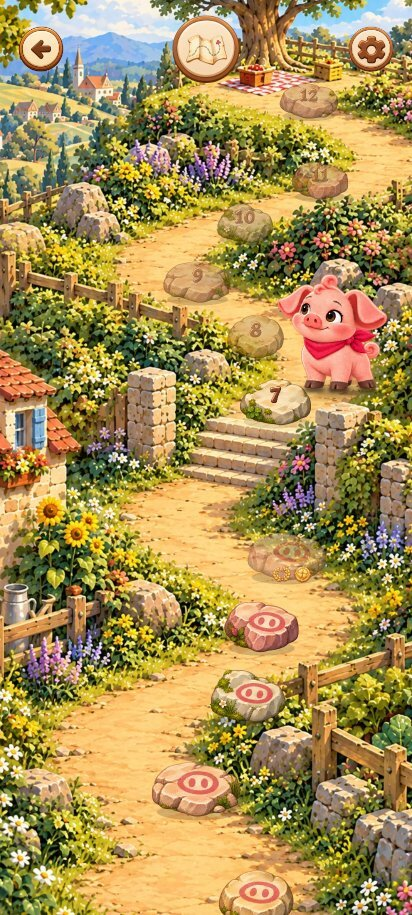
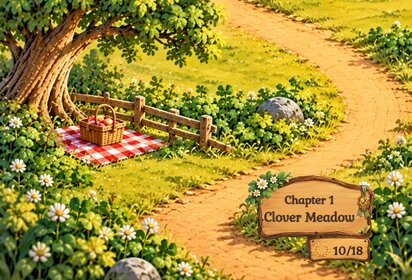
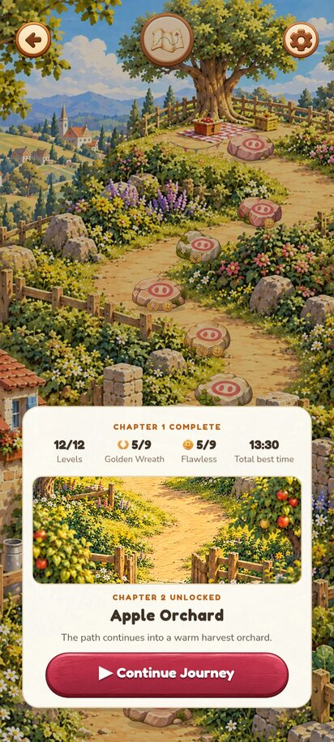

PR #394: медали на камнях карты (ревизия 3)
Исходник: 5a19d349 (PR #394) · Игровое превью. Снимки локальной сборки этого коммита, Chromium (программный WebGL), 412×915, DPR 2, если не указано иное.
1. До и после: одна и та же карта, один и тот же сейв
Слева — прошлая версия («тихое золото»): значки 7–8 CSS px на бежевом камне, на телефоне их не видно. Справа — новая: те же медали, что на экране победы, парой у основания камня.

2. Крупно: шесть камней, все состояния (обе / только венок / только «Без ошибок» / нет)
Сверху — до, снизу — после. Одинаковый размер у обеих медалей, слева всегда венок, справа всегда «Без ошибок»; пустой слот остаётся голым камнем. Медали не заходят на пятачок и не выходят за силуэт камня.

3. Карта целиком в полном разрешении

4. Настоящая победа: экран результата → карта


Кадры возврата на карту (замедлено в 10 раз для съёмки): камень становится пройденным, затем новые медали «выпрыгивают» по очереди, как на экране результата.

Повторное прохождение: венок уже был (плавно проявляется вместе с камнем), «Без ошибок» получена впервые — она выпрыгивает.

5. Другие условия



6. Табличка главы и итоги главы


Программный рендер не заменяет проверку на реальном телефоне.